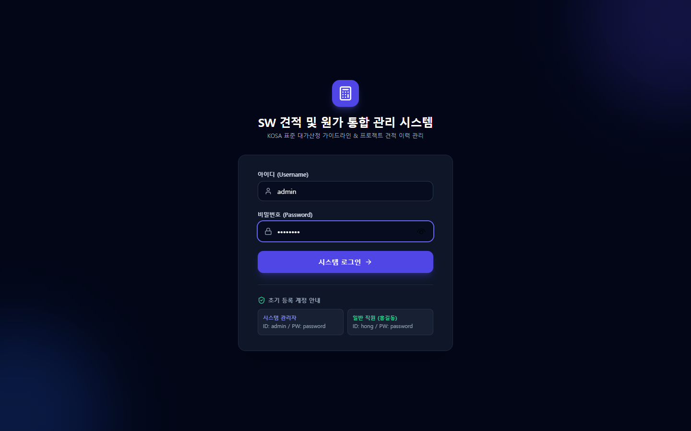
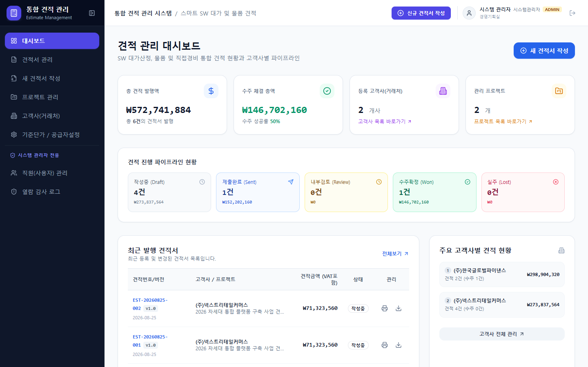
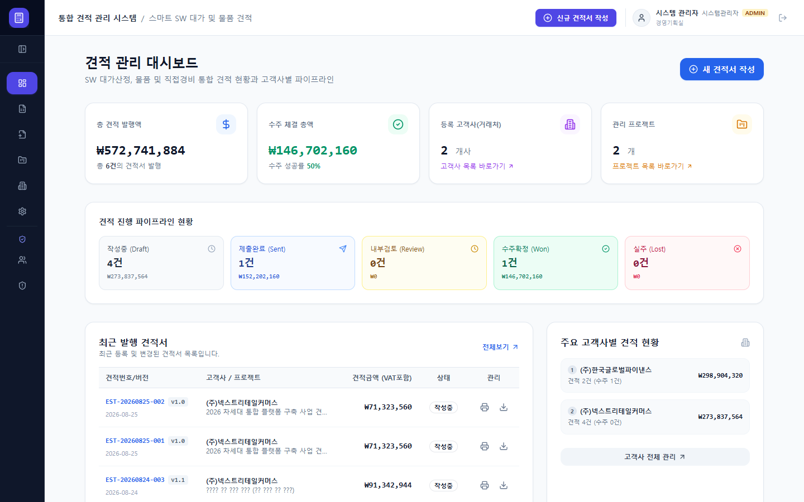
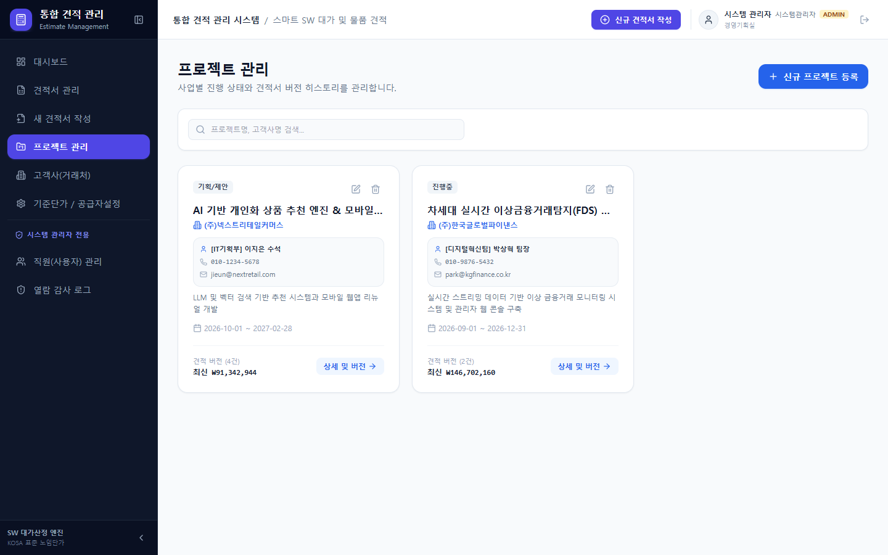
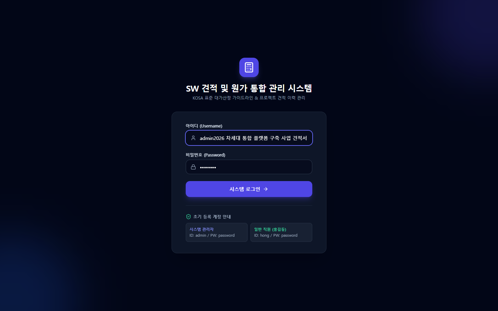
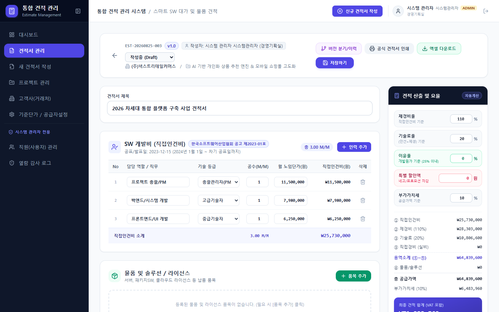
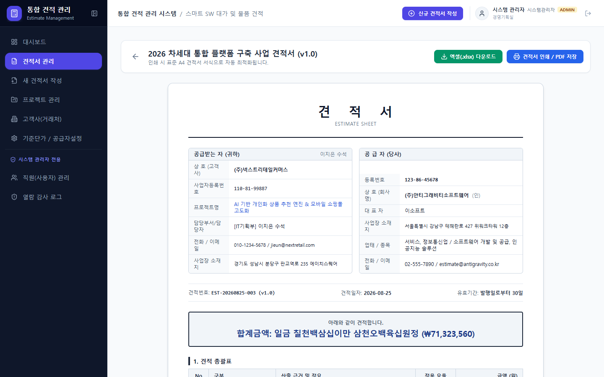
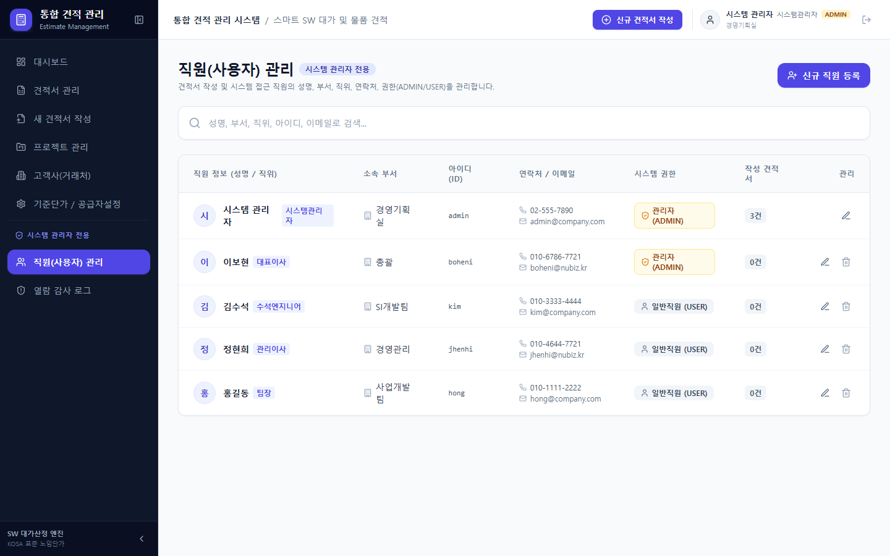
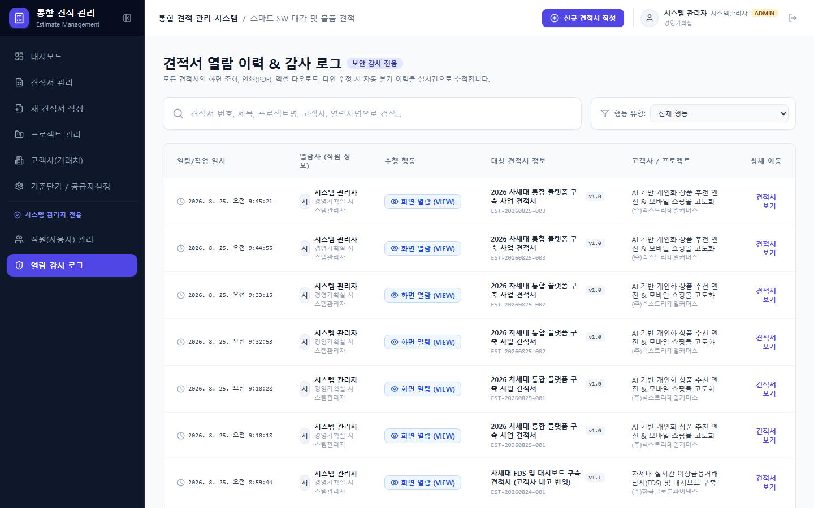

풀 기능 시연 비디오 (1440x900 HD / MP4 고화질)
H.264 / AAC 호환 인코딩💡 영상 재생 시 한국어 AI 성우(선희 Neural)의 음성 내레이션과 하단 한글 자막이 완벽하게 일치하여 재생됩니다.
주요 시연 장면 타임라인 (Timeline & Audio Clips)
각 카드의 [음성 듣기] 버튼을 누르면 해당 장면만 청취할 수 있습니다.
Scene 01 (00:00)1. ID/PW 사용자 인증 로그인
"먼저 아이디와 비밀번호를 입력하여 시스템에 안전하게 로그인합니다."

Scene 02 (00:13)2. 통합 견적 대시보드 및 KPI
"메인 대시보드에서 총 견적 금액, 수주 성공률, 상태별 통계 및 최근 발행 이력을 확인합니다."

Scene 03 (00:22)3. 좌측 메뉴 접기/펼치기
"상단 토글 버튼을 누르면 메뉴가 콤팩트하게 접히며, 호버 시 툴팁으로 메뉴명이 안내됩니다."

Scene 04 (00:31)4. 프로젝트 전담 연락망 관리
"고객사별 전담 담당 부서, 담당자명, 직책, 연락처, 이메일을 체계적으로 관리합니다."

Scene 05 (00:40)5. 신규 스마트 견적서 생성
"고객사와 프로젝트를 지정하고 견적서 제목을 입력하여 스마트 견적서를 생성합니다."

Scene 06 (00:49)6. 2줄 품목 & 슬림 플로팅 요율
"2026 KOSA 노임단가 자동 연동, 2줄 카드형 품목 및 스크롤 시 플로팅 요율 실시간 계산."

Scene 07 (01:08)7. 공식 표준 A4 인쇄 / PDF
"공인 견적 총괄표와 SW인건비 산출서, 공급자 인감, 법적 근거가 완비된 A4 뷰."

Scene 08 (01:20)8. 직원(사용자) 관리 (ADMIN)
"관리자 전용 직원 등록, 수정, 삭제 및 관리자/일반 사용자 권한 제어."

Scene 09 (01:27)9. 열람 보안 감사 로그 (ADMIN)
"열람, 인쇄, 엑셀, 타인수정 시도 이력을 실시간으로 모니터링합니다."